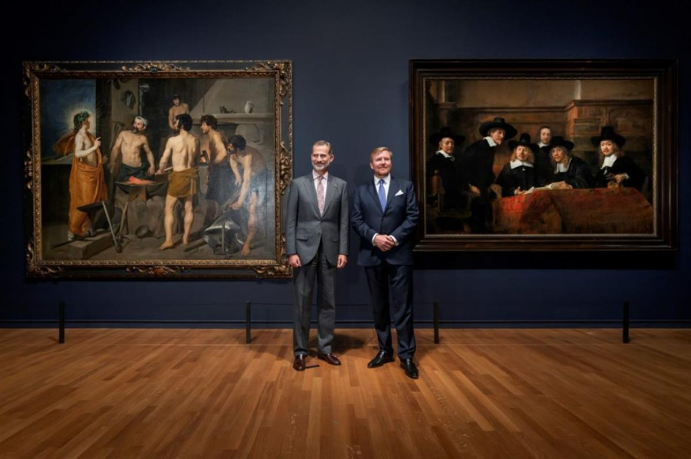
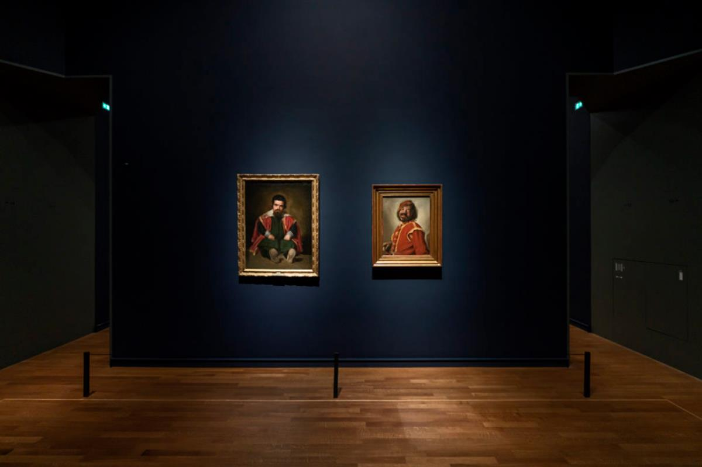
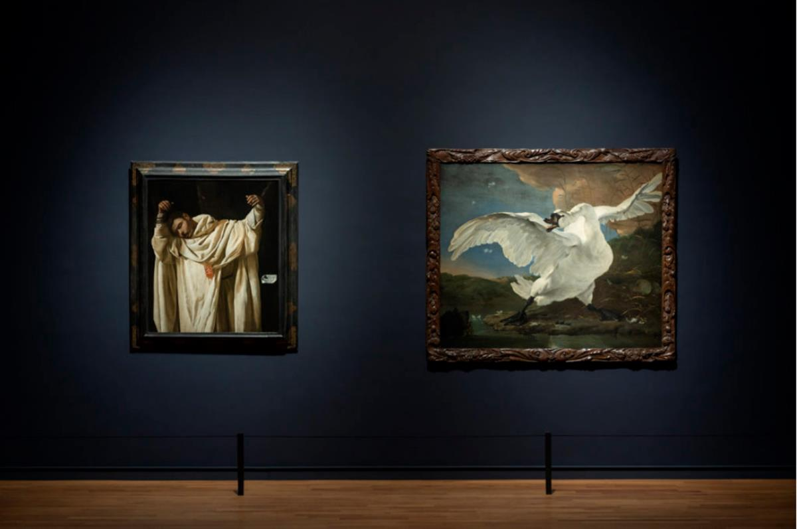
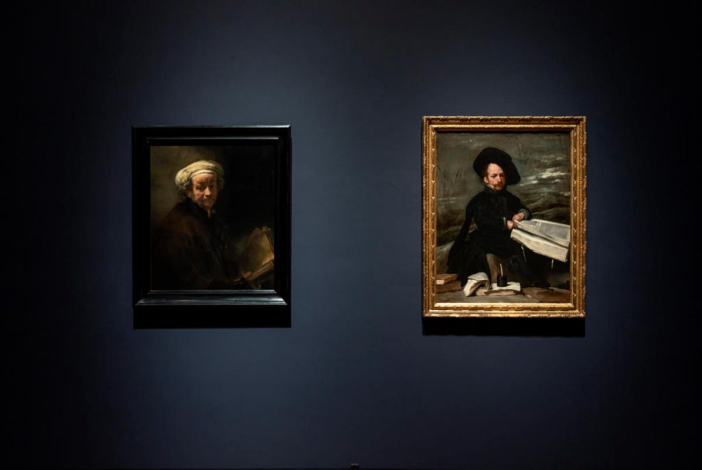
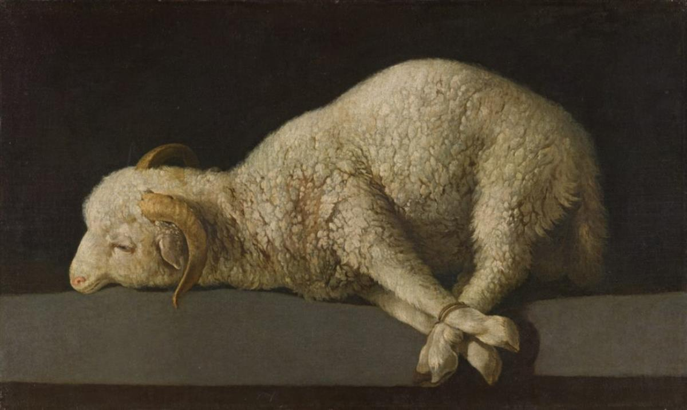
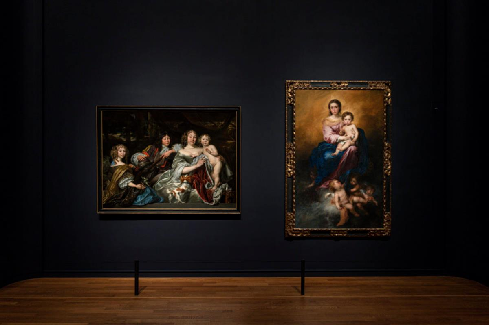
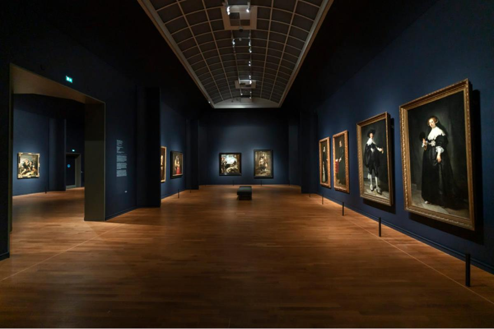

'Rembrandt-Velázquez.' Photo: Olivier Middendor
'Rembrandt-Velázquez.' Photo: Olivier Middendor
Such is the argument of a new Baroque blockbuster show at the Rijksmuseum.
Side by-side comparisons of ancient and modern Masters have been a bankable formula for blockbuster museum exhibitions for quite some time now, but they seem particularly popular lately.
Caravaggio currently converses with Bernini at the Kunsthistorisches Museum in Vienna (until mid-January), while Sofonisba Anguissola and Lavinia Fontana forge “A Tale of Two Woman Painters” at the Prado in Madrid (until mid-February). At the Rijksmuseum in Amsterdam, the Dutch master Rembrandt goes head-to-head with a contemporary he never met, Spanish painter Diego Velázquez, in a dazzling show that enjoyed a regal opening last month in the presence of two kings: Willem-Alexander of the Netherlands and Felipe VI of Spain.
“Rembrandt-Velázquez” caps a landmark year of Rembrandt celebrations, as the Rijksmuseum celebrates the 350th anniversary of the artist’s death. This final chapter opens the superstar Dutchman up for wider interpretation by matchmaking his works with those Velázquez, the most famous artist of the Spanish Golden Age.
It invites viewers to play a little guessing game before they glance at the wall texts. Quick: Which is Catholic, which Protestant? What reeks of Inquisition, and what of Calvinist sobriety? Which of these two nearly identical flower bouquets in glass vases seems to have southern European, versus northern European, lilies?
But the exhibition (on view until January 2020) isn’t exactly what it says on the tin. In fact, the binary of two of Europe’s most famous Baroque artists is only a fraction of what’s on display. The real heart of the show is the other 17th-century Spanish and Dutch Masters who lived and worked during that same period of art history. There are, for instance, comparisons drawn between one of Spain’s major religious painter of the time, Francisco de Zurbarán, and Dutch Golden Age master Pieter Jansz Saenredam. Elsewhere, Bartoleme Murillo from Spain is set against Rembrandt, and so on.
Comparative exhibitions try to engage new audiences with the thrill of new connections. Such mental gymnastics, however, can quickly become tiresome unless the works really do speak to each other in visceral ways.

King Willem-Alexander of the Netherlands and King Felipe VI of Spain meet to celebrate “Rembrandt-Velázquez.” Photo: Olivier Middendorp
A Visual Feast for Two
Chronological exhibitions, organized around “isms”—Impressionism, Fauvism, or Dadaism—once attempted to educate us in art historical paradigms. New historical (or ahistorical) artwork pairings can break these molds and ask us to think outside of tidy art historical boxes.
At least at the Rijksmuseum, Gregor Weber, curator of “Rembrandt Velázquez,” has managed the juxtapositions in ways that feel surprisingly agile, like two puzzle pieces clicking immediately into place. Self-portraits of both masters, Rembrandt’s from 1654 and Velázquez’s from 1640, evince remarkable subtleties of brush stroke and texture. Both painted in sober hues of black, brown, and pale rose, one can almost feel as if the two men might have sat down together in a room and painted one another from a single palette, in the same dusky evening light.
In fact, many of the successful pairings in the show are accomplished through purely visual—rather than thematic—means. A delightful array of complementary reds, greens, and ochers fashion two distinct images of comical figures, Velázquez’s court jester, The Buffoon El Primo and Frans Hals’s jovial tippler, Peeckelhaering, often called The ‘Mulatto.’

“Rembrandt-Velázquez.” Photo: Olivier Middendorp
“The pairs come into a dialogue which strengthens the essential things that each of the works have to say,” says Weber. “Though there are a lot of differences between Calvinistic and Catholic beliefs, there’s the same aim to depict belief, to depict love, to depict dedication to something. The Spanish and the Dutch people had been in war for 80 years, of course, but if you look deeper you see a lot of commonalities. Trying not to look at the differences, but to the commonalities, is a very good message.”
Velázquez’s Portrait of a Knight of the Order of Christ and Carel Fabritius’s Portrait of Abraham de Potter, Amsterdam Silk Merchant seem as if they were created as companion pieces. Both portray men seated in semi-profile from the chest up, gazing somewhere just beyond the viewer; both the subjects sport Van Dyke-style beards, and both are dressed in black robes. One, with gray hair, is seated against a black backdrop; the other, with black hair, is against a white background.
Other connections are almost eerie, for instances the pairing of Rembrandt’s Self-portrait as the Apostle Paul with Velázquez’s Buffoon with Books, a sober image of a court jester portrayed as a thoughtful scholar. The expressions on the two faces are breathtakingly congruous. Both men are painted as if captured in a moment of deep contemplation, and both are looking up from a book. Their eyes meet the eyes of the viewer in a slightly admonitory gaze: Why do you interrupt?

“Rembrandt-Velázquez.” Photo: Olivier Middendorp
Too-Loose Associations
The less successful comparisons come towards the end of the exhibition, where multiple-figure panoramic religious scenes from Spain are juxtaposed against a group portrait of women in an Amsterdam charitable guild.
In other comparable instances, wall texts try to justify certain pairings which nevertheless remain perplexing. Francisco de Zurbaran’s St. Serapion, an image of a martyr whose hands are bound and raised like Christ, hangs alongside Jan Asselij’s The Threatened Swan, a reference to a Dutch political dissident named Johan de Witt. The visual connection between the two images is clearly superficial: The raised arms of the man parallel the outstretched wings of the swan, while both are painted in many shades of white.
The wall text asserts that the link between the two is the notion of “total surrender” in search of a greater purpose beyond yourself. And yet, the swan in Asselij’s image is clearly on the attack, while Zurbaran’s Saint seems to have lost consciousness.
As the trend for comparative shows continues, one hopes that the serious intellectual or thematic connections between artists will win out. But complicated meanings don’t need to be the only goal, as “Rembrandt-Velázquez” demonstrates. Some pairings are simply so gorgeous that they invite us to let go of any analysis, and just welcome our eyes to feast.
“Rembrandt-Velázquez. Dutch & Spanish Masters” is on view through January 19, 2020 at the Rijksmuseum in Amsterdam.

“Rembrandt-Velázquez.” Photo: Olivier Middendorp

Francisco de Zurbarán, Agnus Dei (1635–1640). Madrid, Museo Nacional del Prado

“Rembrandt-Velázquez.” Photo: Olivier Middendorp

“Rembrandt-Velázquez.” Photo: Olivier Middendorp
Nina Siegal, November 18, 2019
SOURCE: ARTNET NEWS